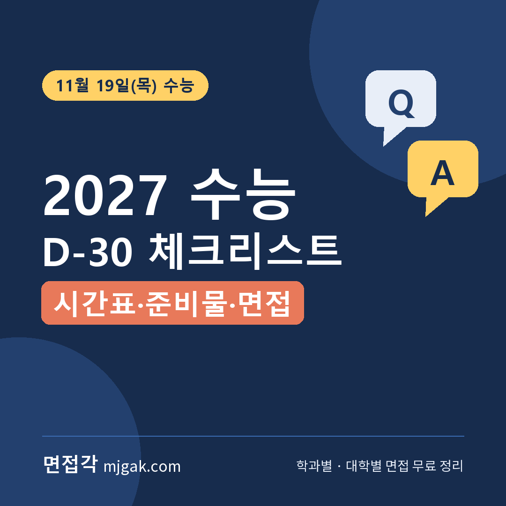
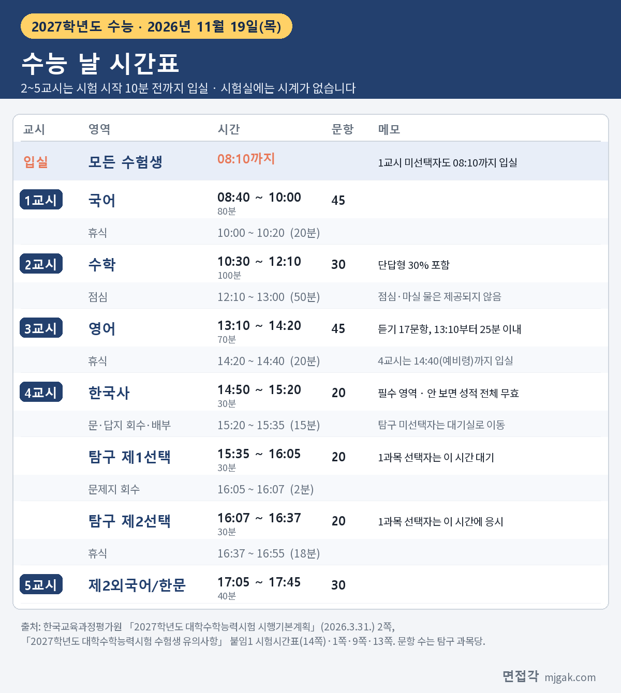
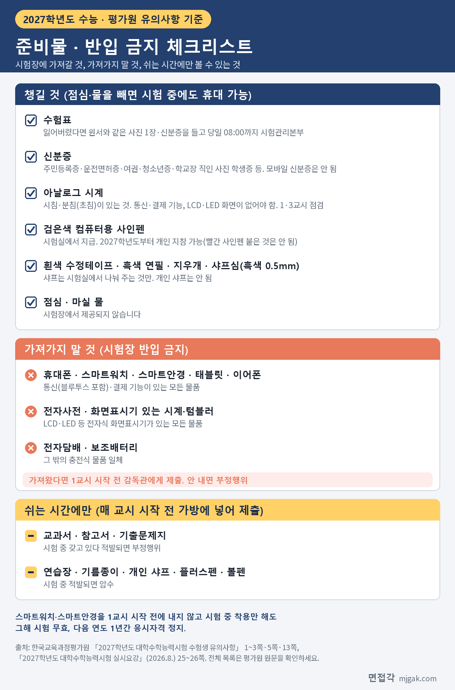
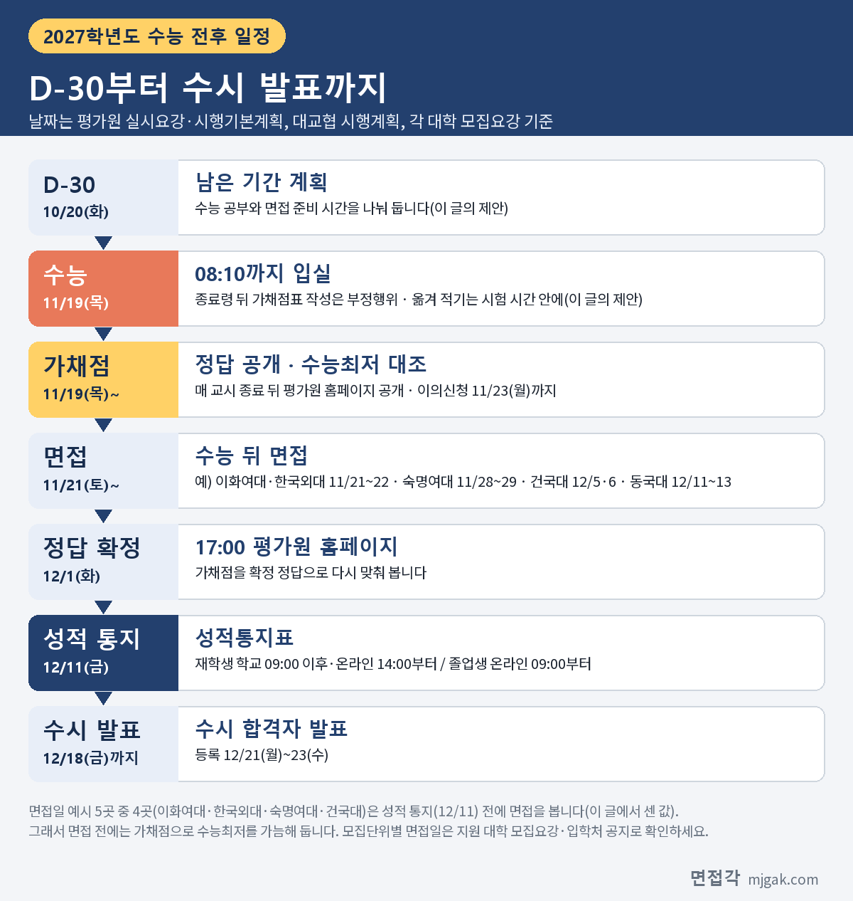

Ctrl+V (서식 유지됨)제목
본문 (이 영역 전체가 복사됩니다)
📷 여기에 이미지 넣기 — 썸네일 — thumb-csat.png (대표 이미지로 지정)
2027학년도 대학수학능력시험은 2026년 11월 19일(목)입니다. 10월 20일(화)이 D-30이었고, 이 글이 올라가는 10월 26일(월)은 D-24입니다(이 글에서 계산한 값). 이 글은 한국교육과정평가원(평가원)의 「2027학년도 대학수학능력시험 실시요강」, 「시행기본계획」, 「수험생 유의사항」, 「부정행위 예방 관련 안내문」, 「시행세부계획 공고」 보도자료와 한국대학교육협의회(대교협) 「2027학년도 대학입학전형시행계획 주요사항」, 각 대학 2027학년도 수시모집요강에서 직접 확인한 내용만 옮겼습니다. 수능 날 시간표와 입실 시각, 챙길 것과 가져가면 안 되는 것, 4교시 탐구 응시 방법, 2027학년도에 새로 바뀐 두 가지, 정답 확정과 성적 통지 날짜, 수능 뒤 면접과 수능최저 확인, 그리고 수시 면접 준비와 수능 공부를 같이 하는 수험생을 위한 남은 기간 시간 배분 제안까지 정리했습니다. 괄호 안 쪽수는 각 문서에 인쇄된 쪽수입니다.
1. 수능 날 시간표와 입실 시각
시험 당일에는 오전 8시 10분까지 지정된 시험실에 들어가 수험번호가 붙은 자리에 앉아야 합니다. 시험이 시작된 뒤에는 시험실에 들어갈 수 없습니다. 1교시 국어를 고르지 않은 수험생도 8시 10분까지 입실해 사인펜과 샤프를 받고 유의사항을 들은 뒤 대기실로 옮깁니다(수험생 유의사항 1쪽). 2교시부터 5교시까지는 시험 시작 10분 전까지 입실해야 합니다(시행기본계획 2쪽). 4교시는 탐구 과목 수와 관계없이 14시 40분(예비령)까지 들어와야 합니다(수험생 유의사항 9쪽).
📷 여기에 이미지 넣기 — 이미지 1 — csat-timetable.png
시간표에서 놓치기 쉬운 것이 있습니다. 3교시 영어는 본령 없이 듣기평가 방송으로 바로 시작합니다(수험생 유의사항 4쪽). 4교시 한국사는 모든 수험생이 반드시 봐야 합니다. 한국사에 응시하지 않으면 수능 성적 자체가 무효가 되고 성적통지표 전체가 나오지 않습니다(수험생 유의사항 1쪽). 그리고 시험장에서는 점심과 마실 물을 주지 않고, 시험실에는 시계가 없습니다(수험생 유의사항 13쪽). 도시락, 물, 아날로그 시계는 직접 챙겨야 합니다.
예비소집은 실시요강에 "시·도 교육감이 시험 전일에 실시"한다고 적혀 있습니다(실시요강 25쪽). 모든 수험생은 예비소집에 가서 수험표를 받고, 수험표에 적힌 선택 영역과 과목이 원서와 같은지, 시험장과 시험실 위치가 어디인지 확인합니다. 시험실이 있는 건물 안으로는 들어갈 수 없습니다(수험생 유의사항 1쪽). 예비소집 시각과 장소는 학교나 교육청 안내를 따르세요. 수험표를 잃어버렸다면 원서와 같은 원판으로 뽑은 사진 1장과 신분증을 가지고 시험 당일 오전 8시까지 시험장 시험관리본부에 가서 다시 받습니다(수험생 유의사항 1쪽).
2. 챙길 것과 가져가면 안 되는 것
평가원은 물품을 세 가지로 나눕니다. 시험 중에도 갖고 있을 수 있는 것, 쉬는 시간에만 볼 수 있는 것, 시험장에 아예 가져오면 안 되는 것입니다.
📷 여기에 이미지 넣기 — 이미지 2 — csat-checklist.png
시험 중에 갖고 있을 수 있는 것은 신분증, 수험표, 검은색 컴퓨터용 사인펜, 흰색 수정테이프, 흑색 연필, 지우개, 샤프심(흑색, 0.5mm), 아날로그 시계, 마스크(감독관 사전 확인) 등입니다(수험생 유의사항 2쪽). 샤프는 시험실에서 감독관이 나눠 주는 것만 쓰고, 개인 샤프는 쓸 수 없습니다(1쪽).
신분증으로 인정하는 것은 주민등록증, 운전면허증, 기간 만료 전 주민등록번호가 표시된 여권, 유효기간 내 주민등록증 발급신청확인서, 유효기간 내 청소년증(또는 발급신청 확인서), 사진이 붙고 성명·생년월일·학교장 직인이 있는 학생증입니다. 모바일 신분증(모바일 주민등록증, 모바일 운전면허증 등)은 시험 당일 신분 확인에 쓸 수 없습니다(수험생 유의사항 2쪽).
시계는 시침과 분침(초침)이 있는 아날로그 시계여야 하고, 결제·통신(블루투스 등) 기능과 전자식 화면표시기(LCD, LED 등)가 모두 없어야 합니다(2쪽). 감독관은 1교시와 3교시에 시계를 확인합니다. 3교시에 휴대할 수 없는 시계로 판정되더라도 점검 시기와 상관없이 부정행위로 처리됩니다(수험생 유의사항 3쪽). 시험장에 가기 전에 시계를 한 번 더 확인하세요.
가져가면 안 되는 것은 원칙적으로 모든 전자기기입니다. 휴대폰, 스마트워치, 스마트안경, 태블릿, 이어폰처럼 통신(블루투스 포함)·결제 기능이 있는 물품, 전자사전이나 화면표시기가 있는 텀블러·시계, 전자담배와 보조배터리 같은 충전식 물품이 모두 해당합니다. 어쩔 수 없이 가져왔다면 1교시 시작 전에 감독관에게 내야 하고, 내지 않으면 부정행위로 처리됩니다(수험생 유의사항 2쪽). 스마트안경이나 스마트워치는 1교시 전에 내지 않고 시험 중 착용만 해도 그해 시험이 무효가 되고 다음 연도 1년간 응시자격이 정지됩니다(3쪽).
교과서, 참고서, 기출문제지는 쉬는 시간에는 볼 수 있지만, 매 교시 시작 전에 가방에 넣어 시험실 앞에 내야 합니다. 시험 중 갖고 있다 적발되면 부정행위로 처리됩니다. 연습장, 기름종이, 개인 샤프, 예비 마킹용 플러스펜, 볼펜은 시험 중 적발되면 압수됩니다(수험생 유의사항 3쪽). 귀마개, 방석처럼 몸 상태 때문에 필요한 물품은 매 교시 감독관의 사전 점검을 거쳐 쓸 수 있습니다(2쪽).
3. 2027학년도에 새로 바뀐 두 가지
첫째, 수험표 뒷면에 가채점표가 공식으로 들어갑니다. 평가원 시행세부계획 보도자료(2026. 7. 1.)는 그동안 일부 지역과 학교가 자체적으로 가채점표를 만들어 주어 왔는데, 2027학년도 수능부터는 수험표 뒷면에 같은 형식의 가채점표를 공식 제공한다고 밝혔습니다. 쓰는 것은 선택이지만 수험표에 따로 스티커를 붙이면 안 됩니다(실시요강 25쪽).
중요한 것은 쓰는 시간입니다. 매 교시 종료령이 울린 뒤 가채점표를 쓰면 부정행위입니다(실시요강 25·26쪽). 수험생 유의사항은 가채점표를 "시험기간 중 또는 시험감독관이 퇴실한 쉬는 시간에" 쓸 수 있다고 적었습니다(8쪽). 종료령이 울리면 필기구를 내려놓고 답안지는 오른쪽, 문제지는 왼쪽에 둔 뒤 손을 책상 밑으로 내립니다(8쪽). 답을 옮겨 적는 일은 시험 시간 안에 끝낸다고 정해 두세요.
둘째, 개인 컴퓨터용 사인펜을 쓸 수 있습니다. 같은 보도자료는 수험생이 평소 쓰던 검은색 컴퓨터용 사인펜을 가져와 쓸 수 있도록 바꿨다고 밝혔습니다. 시험장에서도 예전처럼 사인펜을 나눠 줍니다. 다만 다른 기능이 섞인 필기구는 안 됩니다. 실시요강은 "적색 사인펜이 부착된 검은색 컴퓨터용 사인펜은 사용 불가"라고 예를 들었고(26쪽), 수험생 유의사항은 이런 필기구가 시험 중 적발되면 압수한다고 적었습니다(5쪽). 양쪽에 다른 색이 달린 사인펜을 쓰고 있다면 검은색 한 가지만 있는 것으로 미리 바꿔 두세요.
4. 4교시 탐구, 응시 방법을 꼭 지키세요
4교시는 한국사(14:50~15:20) 뒤에 탐구를 봅니다. 탐구는 과목당 30분이고, 과목 사이에 문제지 회수 시간 2분이 있습니다(실시요강 26쪽). 탐구 2과목을 고른 수험생은 15:35부터 제1선택, 16:07부터 제2선택을 봅니다. 1과목만 고른 수험생은 첫 시간(15:35~16:05) 동안 답안지를 책상 위에 뒤집어 놓고 조용히 기다리고, 16:07부터 응시합니다. 이 대기 시간에 자습 등 시험 준비를 하면 부정행위입니다(수험생 유의사항 9쪽).
2과목 선택 수험생의 순서는 이렇습니다(수험생 유의사항 10쪽).
1. 탐구 문제지 표지의 필적 확인 문구를 답안지 필적확인란에 정자로 씁니다.
2. 제1선택과 제2선택 과목 문제지를 빼냅니다.
3. 문제지 위쪽에 성명, 수험번호, 응시 순서(1 또는 2)를 씁니다.
4. 제1선택 과목 문제지 한 부만 책상 위에 둡니다. 제2선택 과목을 뺀 나머지 과목 문제지(표지 포함)는 반으로 접어 제2선택 과목 문제지와 함께 개인 문제지 보관용 봉투에 넣어 바닥에 내려놓습니다.
5. 문제가 보이지 않게 답안지를 제1선택 과목 문제지 위에 올려 두고 본령을 기다립니다.
평가원 수험생 유의사항에 따르면 2026학년도 수능에서 74명이 4교시 탐구 선택과목 응시 방법을 어겨 그해 시험이 무효 처리됐고, 53명은 제2선택 과목 시간에 제1선택 과목 답안을 쓰거나 고쳐서 시험이 무효 처리됐습니다(10쪽). 정해진 순서가 아닌 다른 선택과목 문제지를 보는 것, 두 과목 문제지를 함께 올려놓고 보는 것, 제2선택 시간에 제1선택 답을 고치는 것 모두 부정행위입니다. 답안지에는 수험표 스티커에 적힌 선택과목 순서대로 제1선택, 제2선택 답란에 표기합니다(10쪽). 남은 모의고사나 집에서 푸는 탐구 시간에 이 순서대로 연습해 두세요.
5. 시험 뒤 일정: 정답 확정과 성적 통지
📷 여기에 이미지 넣기 — 도식 — csat-flow.png
문제와 정답은 11월 19일(목) 매 교시가 끝난 뒤 평가원 홈페이지에 공개됩니다(시험편의 제공 대상자 중 중증 시각장애 수험생의 해당 교시 종료 기준). 정답 이의신청은 11월 19일(목)부터 11월 23일(월)까지 5일간 평가원 전용 게시판에서 받고, 11월 24일(화)부터 12월 1일(화)까지 심사한 뒤 12월 1일(화) 17시에 정답을 확정 발표합니다(실시요강 20쪽).
성적 통지일은 12월 11일(금)입니다. 재학생은 소속 학교에서 9시 이후 받거나 14시부터 온라인으로 발급받을 수 있고, 졸업생과 검정고시 합격자 등은 9시부터 온라인으로 발급받습니다. 온라인 발급은 2027년 1월 7일(목) 18시까지입니다(실시요강 19쪽). 성적통지표에는 표준점수, 백분위, 등급이 나오고, 영어·한국사·제2외국어/한문은 등급만 나옵니다(19쪽).
가채점 뒤 찾아보게 되는 "예상 등급컷"은 평가원이 발표하는 자료가 아닙니다. 가채점은 자기 답과 공개된 정답을 맞춰 보는 데까지이고, 정답은 12월 1일에 확정되며, 공식 성적은 12월 11일 성적통지표로 나옵니다.
6. 수능 뒤 면접과 수능최저 확인
수능을 본 뒤에도 면접이 이어지는 수험생이 있습니다. 각 대학 2027학년도 수시모집요강에서 확인한 예를 들면 이렇습니다.
- 이화여대 미래인재전형-면접형: 1단계 발표 11월 12일(목), 면접 11월 21일(토)~22일(일)(9쪽)
- 한국외대 학생부종합전형(면접형): 1단계 발표 11월 16일(월), 면접 서울캠퍼스 모집단위 11월 21일(토)·글로벌캠퍼스 모집단위 11월 22일(일), 모두 서울캠퍼스에서(19쪽)
- 숙명여대 숙명인재(면접형): 1단계 발표 11월 19일(목) 18시, 2단계 전형료 납부 11월 20일(금) 17시까지, 면접 11월 28일(토)~29일(일)(14쪽)
- 건국대 KU자기추천: 1단계 발표 11월 20일(금) 14시 예정, 2단계 전형료 11월 23일(월) 14시까지, 면접 12월 5일(토)·6일(일)(31쪽)
- 동국대 Do Dream전형: 1단계 발표 11월 13일(금) 예정, 2단계 전형료 11월 16일(월) 16시까지, 면접 12월 11일(금)~13일(일)(18쪽)
두 가지를 짚어 둡니다. 먼저 수능이 있는 주에도 발표와 납부 마감이 있습니다. 동국대는 수능 3일 전(이 글에서 계산한 값)인 11월 16일(월) 16시가 2단계 전형료 마감이고, 숙명여대는 수능 당일 저녁에 1단계를 발표하고 다음 날 17시에 전형료를 마감합니다. 지원한 대학의 발표일과 납부 마감을 달력에 미리 적어 두세요.
다음으로 위 5곳 중 4곳(이화여대·한국외대·숙명여대·건국대)은 성적 통지일인 12월 11일보다 먼저 면접을 봅니다(이 글에서 센 값). 수능최저학력기준이 있는 전형이라면 면접을 볼 때 손에 있는 것은 가채점 결과뿐입니다. 수능 당일이나 다음 날 가채점을 마치면 지원한 전형의 수능최저 기준과 맞춰 보세요. 면접각 수능최저 모아보기(https://mjgak.com/minimum/)에 면접이 있는 전형의 최저를 모아 두었습니다. 최저 기준은 대학과 전형, 모집단위마다 다르니 최종 확인은 지원 대학 모집요강으로 하세요. 가채점은 확정 점수가 아니라는 점도 함께 기억하세요.
수시 합격자 발표는 12월 18일(금)까지, 합격자 등록은 12월 21일(월)~23일(수)입니다(대교협 2027학년도 대학입학전형시행계획 주요사항 1쪽).
7. 면접과 수능을 같이 준비한다면, 남은 24일 나누기
여기부터는 이 글이 제안하는 방법이고, 평가원이나 대학이 정한 기준이 아닙니다. 10월 26일(월)부터 수능 전날 11월 18일(수)까지 24일을 네 구간으로 나눴습니다(이 글에서 계산한 값). 사람마다 과목 상황과 면접 일정이 다르니 비율은 자기에게 맞게 고치세요.
10월 26일(월)~11월 1일(일), D-24~D-18: 수능 공부가 중심입니다. 면접은 하루 30분 정도만 씁니다. 학생부를 처음부터 끝까지 한 번 읽으며 활동마다 왜 했는지, 무엇을 했는지, 무엇이 달라졌는지를 메모합니다.
11월 2일(월)~11월 8일(일), D-17~D-11: 그대로 수능 중심입니다. 면접은 하루 30분 정도로 예상 질문 목록을 만들고, 하루에 서너 개씩 1분 답변을 녹음해 봅니다.
11월 9일(월)~11월 15일(일), D-10~D-4: 면접 시간을 줄여 하루 10~20분, 이미 만든 답의 첫 문장만 소리 내어 말해 보는 정도로 둡니다. 남은 시간은 수능에 씁니다.
11월 16일(월)~11월 18일(수), D-3~D-1: 수능만 봅니다. 면접 준비는 멈추고, 1단계 발표 확인과 전형료 납부처럼 꼭 해야 하는 확인만 합니다. 수험표, 신분증, 시계, 도시락을 챙기고 예비소집 안내를 따릅니다.
수능 전에 면접이 있다면 그 면접 앞뒤만 바꿉니다. 예를 들어 광운대 광운참빛인재전형Ⅰ(면접형)은 10월 28일(수) 15시에 1단계를 발표하고 10월 31일(토) 또는 11월 1일(일)에 면접을 봅니다(광운대 모집요강 18쪽). 고려대 계열적합전형은 10월 30일(금) 17시 발표, 11월 7일(토) 인문·11월 8일(일) 자연 면접입니다(고려대 모집요강 9쪽). 이런 경우 발표 날부터 면접 전날까지 며칠은 면접 비중을 크게 올리고, 면접 다음 날부터 원래 비율로 돌아가는 방법이 있습니다. 광운대 면접이 끝나면 수능까지 18~19일, 고려대 면접이 끝나면 11~12일이 남습니다(이 글에서 계산한 값).
수능 뒤 면접만 남았다면 11월 20일(금)이 첫 준비일입니다. 11월 21일(토)에 면접이 있다면 준비할 수 있는 날은 이날 하루라, 수능 전 30분씩 해 둔 학생부 메모와 녹음이 그대로 쓰입니다.
📷 여기에 이미지 넣기 — 이미지 3 — 제미나이 생성: 창가 책상에서 아날로그 손목시계·검은 사인펜·수정테이프·투명 필통·체크리스트 옆에 두고 면접 답변을 소리 내어 연습하는 학생(실사) / "제미나이 프롬프트 1"
(AI로 만든 이미지로, 실제와 다를 수 있습니다)
생활 리듬은 사람마다 다르지만, 남은 기간 중 며칠은 실제 시간표대로 8시 40분에 국어, 10시 30분에 수학을 풀어 보는 방법을 권합니다. 평소 시험장에 가져갈 아날로그 시계를 차고 풀면 시계 보는 습관도 함께 맞출 수 있습니다. 잠을 크게 줄이기보다 지금까지 해 온 생활 리듬을 유지해 보세요. 일반적인 권유이니 건강 상태에 맞게 조절하세요.
8. D-30 체크리스트
□ 수험표를 받을 예비소집 시각과 장소를 학교·교육청 안내로 확인했다
□ 신분증이 인정 목록에 있는 실물 신분증인지 확인했다(모바일 신분증은 안 됨)
□ 시침·분침이 있고 통신·결제 기능과 화면표시기가 없는 아날로그 시계를 준비했다
□ 개인 사인펜을 쓴다면 다른 색 펜이 붙지 않은 검은색 컴퓨터용 사인펜이다
□ 휴대폰·스마트워치·이어폰·보조배터리는 시험장에 가져가지 않거나, 가져가면 1교시 전에 낸다
□ 도시락과 마실 물을 챙길 계획을 세웠다
□ 4교시 탐구 응시 순서(문제지 한 부만, 제1선택 답은 제1선택 시간에만)를 연습했다
□ 가채점표는 시험 시간 안에만 쓴다고 정했다
□ 지원 대학의 1단계 발표일·전형료 마감·면접일을 달력에 적었다
□ 지원 전형의 수능최저 기준을 모집요강에서 확인했다
9. 함께 보면 좋은 글
D-30 체크리스트는 새로 외울 것을 늘리는 목록이 아니라, 시험 날 실수로 잃는 것을 줄이는 목록입니다.
※ 이 글의 시험 일정과 규정은 한국교육과정평가원 「2027학년도 대학수학능력시험 실시요강」, 「2027학년도 대학수학능력시험 시행기본계획」(2026. 3. 31.), 「2027학년도 대학수학능력시험 수험생 유의사항」, 「2027학년도 대학수학능력시험 부정행위 예방 관련 안내문」, 「2027학년도 대학수학능력시험 시행세부계획 공고」 보도자료(2026. 7. 1.)에서, 수시 합격자 발표·등록 일정은 한국대학교육협의회 「2027학년도 대학입학전형시행계획 주요사항」(2025. 4. 30.)에서, 대학별 면접 일정은 이화여자대학교, 한국외국어대학교, 숙명여자대학교, 건국대학교, 동국대학교, 광운대학교, 고려대학교의 2027학년도 수시모집요강에서 인용했습니다. 괄호 안 쪽수는 각 문서에 인쇄된 쪽수입니다. 날짜 차이와 남은 일수는 이 글에서 계산한 값이고, 시간 배분은 이 글의 제안입니다. 시험 전에 평가원 수험생 유의사항 원문을 한 번 꼭 읽으세요.
면접각은 76개 대학의 2027학년도 면접 정보와 71개 학과별 면접 질문·답변 예시를 무료로 정리한 사이트입니다. 수능 시간표, 준비물과 반입 금지 물품, 가채점과 성적 통지 일정, 수능 뒤 면접 날짜를 한 페이지에 모아 두었습니다. 회원가입 없이 바로 볼 수 있습니다.
태그 (#은 에디터가 자동으로 붙이므로 그대로 붙여 넣어도 됩니다)
넣을 이미지 목록 (docs/promo/img 폴더)




제미나이 프롬프트 1 — 창가 책상에서 아날로그 손목시계·검은 사인펜·수정테이프·투명 필통·체크리스트 옆에 두고 면접 답변을 소리 내어 연습하는 학생(실사) (4:3) — 제미나이에 그대로 붙여 넣어 이미지를 만드세요